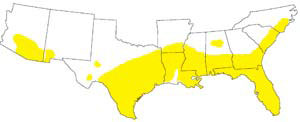

MATTHEW T. STALLBAUMER
Unless you live in Florida, the Deep South, the eastern two-thirds of Texas or southern Arizona or New Mexico, any brightly banded little snake probably is a harmless milk snake, not a coral.